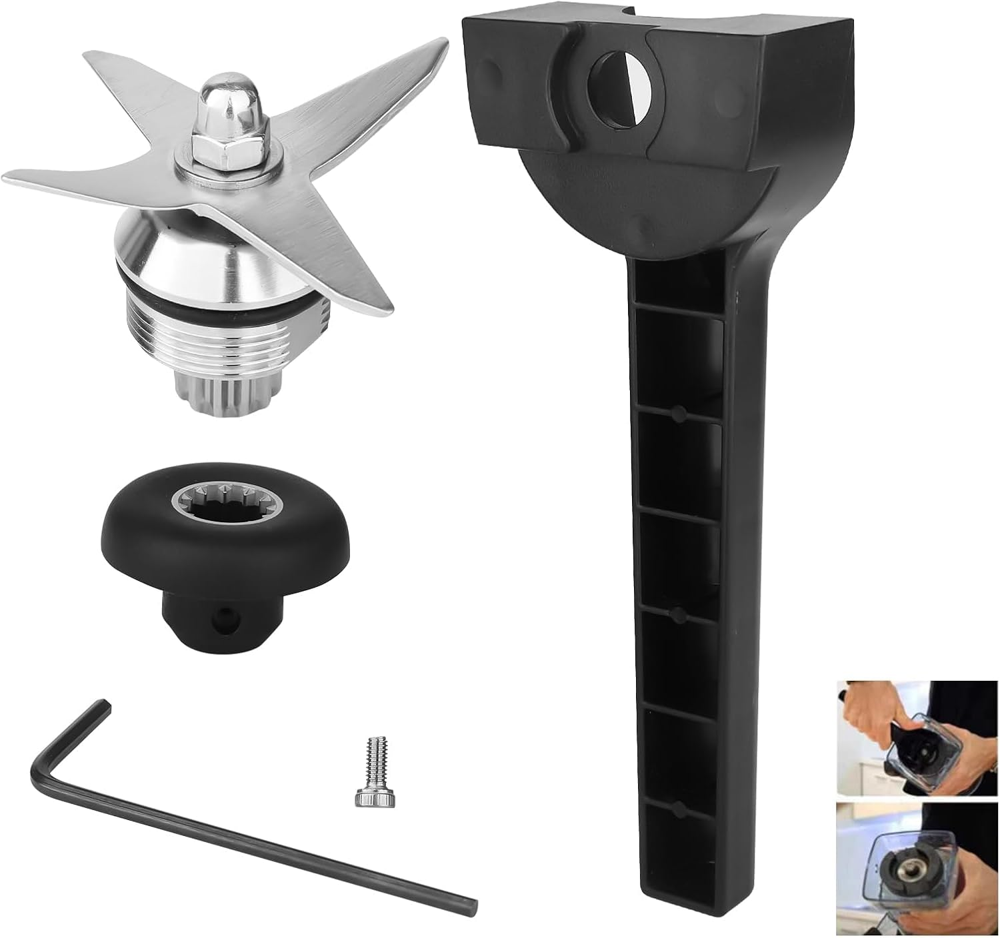

Compatible with Vitamix 5200 / 5000 / 6300 (C-Series). This is a compatible replacement part, not an OEM Vitamix product.

This is a compatible replacement part, not an OEM Vitamix product.
Check your blender’s brand and model number (usually on the base or a label). This part is Compatible with Vitamix 5200 / 5000 / 6300 (C-Series). If your model is not listed, contact us with the model number before you order.
No. This is a compatible / aftermarket replacement part, not an original equipment manufacturer (OEM) product. We are not affiliated with or endorsed by Vitamix.
You may request a return within 30 days of delivery if the item is unused and in its original packaging. Used or installed parts cannot be returned.
Orders are processed within 1–3 business days. Estimated delivery is typically 7–20 business days, with tracking once your order ships.